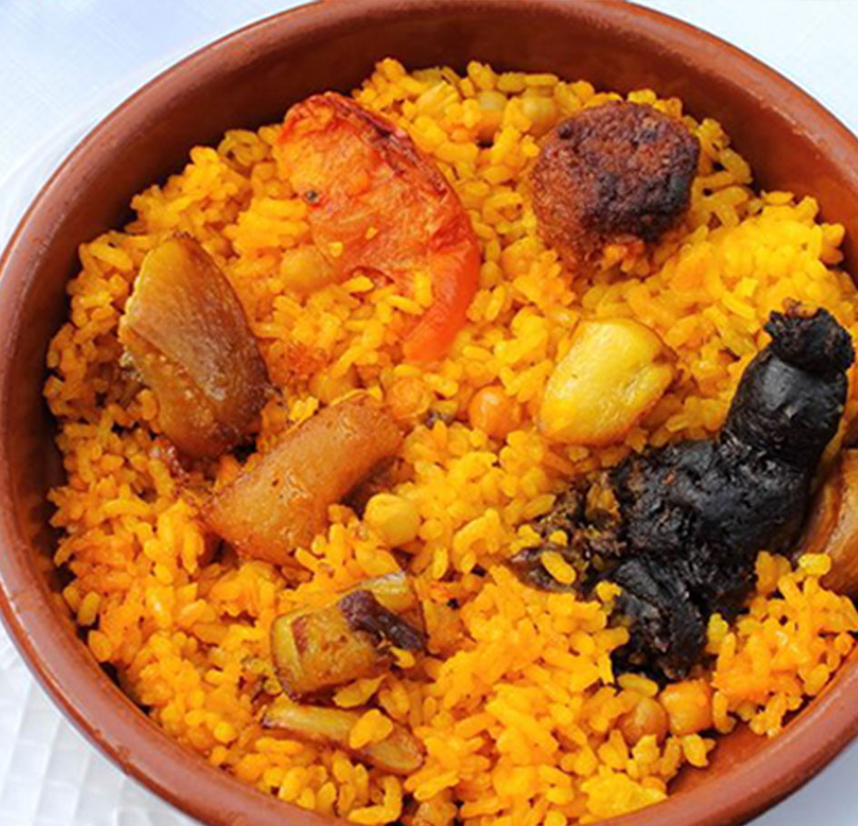

Ingredientes (4-6 personas)
| Producto | Cantidad |
|---|---|
| arroz bomba | 300 gr |
| garbanzos cocidos | 100 gr |
| morcillas de cebolla | 4 |
| patata | 1 |
| tomate triturado | 3 cucharadas |
| AOVE | |
| azafrán | |
| costillas | 4 |
| tomate | 1 |
| ajo | 1 cabeza + 2 dientes |
| sal | |

Elaboración
- Pela la patata, córtala en lonchas finas y fríelas en una sartén con aceite. Escurre y reserva.
- Corta el tomate en lonchas y rehógalas en una sartén. Retira a un plato.
- Corta las costillas por la mitad, sazónalas y dóralas en otra sartén con aceite. Retira a un plato.
- Agrega las morcillas y rehógalas. Retíralas.
- Añade azafrán a la sartén, la salsa de tomate, los garbanzos y el arroz. Sazona y rehoga.
- Coloca el conjunto en una cazuela de barro y añade la costilla, y la morcilla. Agrega las patatas y las lonchas de tomate.
- Coloca la cabeza de ajos en la mitad, vierte el caldo e introduce la cazuela de barro en el horno a 220ºC durante 20 minutos.
- Sirve.